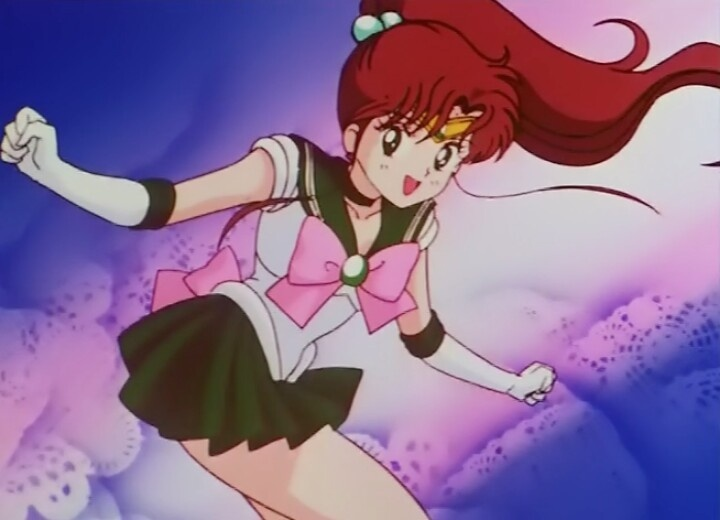

Here is where you can meet and learn a little bit about the Sailor Guardians from the 1990's Japanese manga and anime series Sailor Moon! It follows the story of 14 year old Usagi Tsukino (Sailor Moon) who discovers the power within herself alongside her friends as they save the world from destruction.
Sailor Moon
Usagi Tsukino is the Sailor Guardian of love and justice: Sailor Moon. She is the reincarnation of Princess Serenity. Usagi is known to be an immature crybaby. As the story progresses, however, she embraces the chance to use her powers to protect her loved ones.
Sailor Venus
Minako Aino, is the Sailor Guardian of love and beauty: Sailor Venus. With her white cat companion, Atermis, she leads the inner Guardians to protect Sailor Moon.
Sailor Mercury

Ami Mizuno is the Sailor Guardian of water and wisdom: Sailor Mercury. Amy's shy exterior masks a passion for learning and taking care of people around her.
Sailor Mars

Rei Hino is the Sailor Guardian of fire and passion: Sailor Mars. Because of her work as a Shino priestess, Rei has limited precognition and can dispel evil using her ofuda scrolls. She becomes easily annoyed by Usagi's laziness.
Sailor Jupiter

Makoto Kino is the Guardian of thunder and courage: Sailor Jupiter. She excels at hand-to-hand combat. When she is not fighting evil, she cultivates her physical strength and domestic interest, including cooking and gardenning.
Sailor Neptune
Michiru Kaioh is the Guardian of ocean and embrace: Sailor Neptune. She's an elegant violinist and painted. Michiru gave up her dreams and became fully devoted to her duty as a Sailor Guardian, alongside her partner, Haruka Tenoh.
Sailor Uranus

Haruka Tenoh is the Guardian of sky and flight: Sailor Uranus. Before becoming a Guardian, she aspired to be a race car driver. Because of her tomboyish look, other characters mistake her for a man. When fighting evil, she distrusts outside help and prefers to work solely with her girlfriend, Sailor Neptune.
Sailor Saturn
Hotaru Tomoe is the Guardian of Silence, Destruction and Rebirth: Sailor Saturn. She is often pensive and as a human has the inexplicable power to heal. Saturn's weapon is a Silence Glaive, which gives her the power to generate barriers and destory a planet.
Sailor Pluto

Setsuna Meioh is the Guardian of spacetime and change: Sailor Pluto. She has the duty of guarding the Sapce-Time Door from unauthorized travelers. Later, she lives her human live with Hotaru, Haruka and Michiru.